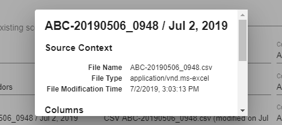
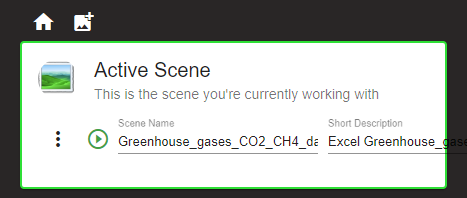
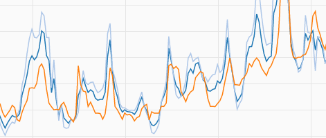

<mat-card>
  <mat-card-content>

    <div id="div_logo">
      
    </div>

    <div id="div_action_cards">

      <mat-card class="action-card">
        <mat-card-header>
          <div mat-card-avatar [id]="selectedDataStorage === couchDB ? 'couchdb-image' : 'browser-image'"></div>
          <mat-card-title>Step 1: Data Storage</mat-card-title>
          <mat-card-subtitle>Define where to store the data</mat-card-subtitle>
        </mat-card-header>
        
        <mat-card-content>
          <p>
            Koia writes and reads data from the browser's internal
            <a href="https://developer.mozilla.org/en/docs/Web/API/IndexedDB_API" target="_blank">IndexedDB</a>
            or from an external <a href="http://couchdb.apache.org/" target="_blank">CouchDB</a>.
            The latter has the following advantages:
          </p>
          <ul>
            <li>All data remains available even when the browser cache is cleared.</li>
            <li>The data can be shared with other persons.</li>
          </ul>
        </mat-card-content>

        <mat-card-actions>
          <mat-form-field>
            <mat-select id="select_data_storage" placeholder="Current Data Storage" [(ngModel)]="selectedDataStorage"
              (selectionChange)="onDataStorageChanged()">
              <mat-option *ngFor="let dataStorage of dataStorages" [value]="dataStorage">
                {{ dataStorage }}
              </mat-option>
            </mat-select>
          </mat-form-field>
          <button id="but_define_connection" mat-icon-button *ngIf="selectedDataStorage === couchDB"
            matTooltip="Configure access to CouchDB" color="primary" (click)="showCouchDBConnectionDialog()">
            <mat-icon>settings</mat-icon>
          </button>
        </mat-card-actions>
      </mat-card>

      <mat-card class="action-card">
        <mat-card-header>
          <div mat-card-avatar id="importselect-image"></div>
          <mat-card-title>Step 2: Import and select data</mat-card-title>
          <mat-card-subtitle>Create new scene or select an existing one</mat-card-subtitle>
        </mat-card-header>
        
        <mat-card-content>
          <p>
            Import data to create a new scene or select an existing scene containing data that has been previously imported.
          </p>  
          <p>
            At any time later it is possible to switch between scenes or to create new ones by pressing the <mat-icon style="vertical-align: middle">collections
            </mat-icon> or <mat-icon style="vertical-align: middle"> add_photo_alternate</mat-icon> buttons.
          </p>
          <p *ngIf="ready && scenesCount >= 0">
            {{ selectedDataStorage }} currently contains <b>{{ scenesCount }} scenes.</b>
          </p>
        </mat-card-content>
      </mat-card>

      <mat-card class="action-card">
        <mat-card-header>
          <div mat-card-avatar id="create-image"></div>
          <mat-card-title>Step 3: Create graphics</mat-card-title>
          <mat-card-subtitle>Display your data as charts, pivot tables, etc.</mat-card-subtitle>
        </mat-card-header>
        
        <mat-card-content>
          <p>
            Refine your data with time and value filters and create pivot tables, relationship graphs, summaries and a variety of different charts.
          </p>
           <p>
            When satisfied with the outcome, it is possible to save the view or to export the graphics as PNG images.
          </p>
        </mat-card-content>
        <mat-card-actions>
          <div class="div_actions">
            <button mat-stroked-button color="primary" [disabled]="!ready" [routerLink]="[urlScene]">
              <mat-icon>play_circle_filled</mat-icon>
              <span>&nbsp;Start</span>
            </button>
          </div>
        </mat-card-actions>
      </mat-card>
    </div>

    <mat-horizontal-stepper [linear]="!stepsVisible" #stepper>

      <ng-template matStepperIcon="edit">
        <mat-icon>check</mat-icon>
      </ng-template>

      <ng-template matStepperIcon="about">
        <mat-icon>contact_support</mat-icon>
      </ng-template>
      <ng-template matStepperIcon="trust">
        <mat-icon>security</mat-icon>
      </ng-template>
      <ng-template matStepperIcon="features">
        <mat-icon>build</mat-icon>
      </ng-template>
      <ng-template matStepperIcon="data">
        <mat-icon>insert_drive_file</mat-icon>
      </ng-template>
      <ng-template matStepperIcon="scenes">
        <mat-icon>collections</mat-icon>
      </ng-template>
      <ng-template matStepperIcon="views">
        <mat-icon>pageview</mat-icon>
      </ng-template>
      <ng-template matStepperIcon="screenshots">
        <mat-icon>laptop_mac</mat-icon>
      </ng-template>

      <mat-step label="About Koia" state="about" [stepControl]="stepVisibleControl">
        <mat-card class="info-card" *ngIf="stepsVisible">
          <mat-card-header>
            <div mat-card-avatar id="about-image"></div>
            <mat-card-title>About Koia</mat-card-title>
            <mat-card-subtitle>What is Koia and where does it come from?</mat-card-subtitle>
          </mat-card-header>
          <mat-card-content>
            <p>
              Koia is an <a href="https://angular.io/" target="_blank">angular-based</a>, open-source web tool that anyone can use
              for free to create charts, relationship graphs, summaries and pivot tables out of custom data in just a
              few minutes.
            </p>
            <p>
              Koia was originally built to improve analysis and visualization capabilities for data collected and
              structured with the <a href="https://retrospective.centeractive.com/" target="_blank">Retrospective
                Log Analyzer</a>&nbsp;
              <a href="https://retrospective.centeractive.com/" target="_blank"></a>
            </p>
          </mat-card-content>
        </mat-card>
      </mat-step>

      <mat-step label="Trust" state="trust" [stepControl]="stepVisibleControl">
        <mat-card class="info-card" *ngIf="stepsVisible">
          <mat-card-header>
            <div mat-card-avatar id="shield-image"></div>
            <mat-card-title>Open-source / Closed-data</mat-card-title>
            <mat-card-subtitle>Keep control over the code and your data</mat-card-subtitle>
          </mat-card-header>
          <mat-card-content>
            <p>
              Koia is open-source software and will remain so forever. The source code is <a
                href="https://github.com/centeractive/koia" target="_blank">
                publically available</a> and can be inspected, modified and enhanced by anyone.
              Koia runs on public web servers but it can also easily be installed in your trusted environment.
            </p>
            <p>
              The Koia web application loads static content from a web site but your data
              never flows back to that web site. It only 'travels' between your browser
              and the data storage, without it ever being accessible to any unauthorized third party. You decide whether
              the data is kept locally on your computer or in a private external data storage.
            </p>
          </mat-card-content>
        </mat-card>
      </mat-step>

      <mat-step label="Features" state="features" [stepControl]="stepVisibleControl">
        <mat-card class="info-card" *ngIf="stepsVisible">
          <mat-card-header>
            <div mat-card-avatar id="features-image"></div>
            <mat-card-title>Features</mat-card-title>
            <mat-card-subtitle>What can Koia do for me?</mat-card-subtitle>
          </mat-card-header>
          <mat-card-content>
            <p>
              Koia differs from similar programs mainly in that the context to the original data is never lost. You are always only a mouseclick apart from seeing the raw data on which the displayed element or value is based. 
              Next to this, Koia enables the uploading of multiple data sets, so it is possible to create graphics based on different data without opening a lot of tabs in your browser but switching between the data sets in one tab.
            </p>
            <p>Other features:</p>
            <ul>
              <li>Column filters supporting  the following operators: contains, &lt;, &lt;=, =, &gt;=, &gt;, not empty</li>
              <li>Draggable column value range filters</li>
              <li>Automatic and manual value range grouping</li>
              <li>Customizable grids</li>
              <li>Value sampling</li>
              <li>Exporting charts to PNG images</li>
              <li>Exporting summary tables to Excel</li>
              <li>Pivot tables with drag and drop column support</li>
              <li>...</li>
            </ul>
          </mat-card-content>
        </mat-card>
      </mat-step>

      <mat-step label="Data" state="data" [stepControl]="stepVisibleControl">
        <mat-card class="info-card" *ngIf="stepsVisible">
          <mat-card-header>
            <div mat-card-avatar id="data-image"></div>
            <mat-card-title>Data Formats</mat-card-title>
            <mat-card-subtitle>Import your structured data</mat-card-subtitle>
          </mat-card-header>
          <mat-card-content>
            <p>
              Data is loaded from files to the backing data storage through Koia itself or it may be written to it by a
              third party program.
            </p>
            <p>
              The following file types are supported.
            </p>
            <ul>
              <li *ngFor="let reader of readers">
                <p><b>{{ reader.getSourceName() }} ({{ reader.getFileExtension() }})</b><br>
                  {{ reader.getDescription() }}</p>
              </li>
            </ul>
            <p>
              When importing a file, you're granted full control over which portions of the data should be imported.
              You're also in control over...
            </p>
            <ul>
              <li>The data types to be used for storing the values in the data storage</li>
              <li>The format to be applied for displaying certain values</li>
            </ul>
          </mat-card-content>
        </mat-card>
      </mat-step>

      <mat-step label="Scenes" state="scenes" [stepControl]="stepVisibleControl">
        <mat-card class="info-card" *ngIf="stepsVisible">
          <mat-card-header>
            <div mat-card-avatar id="datascene-image"></div>
            <mat-card-title>What is a Scene?</mat-card-title>
            <mat-card-subtitle>Scenes represent individual datasets</mat-card-subtitle>
          </mat-card-header>
          <mat-card-content>
            <p>
              Once loaded to the data storage, individual datasets are each represented by a <b>Scene</b>.
              You can switch between different scenes as you please.
            </p>
            <p>
              Scenes can be given a user-defined name and description. They also contain the following items.
            </p>
            <ul>
              <li>Information about the origin of the loaded data (i.e. file name and modification date).</li>
              <li>A link to the loaded raw data in the data storage.</li>
              <li>The name, data type, width and format of individual data columns.</li>
              <li>View definitions that were saved by the user in order to be restored later on.</li>
            </ul>
          </mat-card-content>
        </mat-card>
      </mat-step>¨

      <mat-step label="Views" state="views" [stepControl]="stepVisibleControl">
        <mat-card class="info-card" *ngIf="stepsVisible">
          <mat-card-header>
            <div mat-card-avatar id="view-image"></div>
            <mat-card-title>Views</mat-card-title>
            <mat-card-subtitle>Koia offers convenient views of your data</mat-card-subtitle>
          </mat-card-header>
          <mat-card-content>
            <ul>
              <li>The <b>Raw Data</b> table presents the data in an unprocessed form in pages of adjustable size.
                The table offers sorting and filtering of individual columns.</li>
              <li>The <b>Grid View</b> contains a variable number of elements that are held in a fixed grid of
                customizable dimension. Grid elements (summary tables, charts and graphs) may fit into a single cell or
                they may spread over several columns and rows, it's all up to you. When the window size changes, the
                element size also changes in order to always fit the allocated grid space.
              </li>
              <li>The <b>Flex View</b> contains a variable number of elements (summary tables, charts and graphs) of
                specific size each. When the window size changes, the size of single elements are not changed. The
                elements are however automatically laid out according to the available window space.</li>
              <li>The <b>Pivot Table</b> is a powerful tool to compute, summarize, and analyze data, with revealing
                patterns and trends. It's based on amazing <a href="https://www.npmjs.com/package/pivottable"
                  target="_blank">PivotTable.js</a> that offers many different views (e.g. heatmaps and table barcharts)
                and lets you shape the pivot table through drag and drop of individual columns.</li>
            </ul>
          </mat-card-content>
        </mat-card>
      </mat-step>

      <mat-step label="Screenshots" state="screenshots" [stepControl]="stepVisibleControl">
        <!-- if we remove mat-card (*ngIf) instead of hiding enclosing div, we would loose carousel -->
        <div [hidden]="!stepsVisible">
          <mat-card class="info-card">
            <mat-card-header>
              <div mat-card-avatar id="screenshots-image"></div>
              <mat-card-title>Screenshots</mat-card-title>
              <mat-card-subtitle>This is what Koia in action looks like</mat-card-subtitle>
            </mat-card-header>
            <mat-card-content>
              <div class="carousel" *ngIf="showScreenshots">
                
              </div>
              <br>
            </mat-card-content>
          </mat-card>
        </div>
      </mat-step>
    </mat-horizontal-stepper>
  </mat-card-content>
</mat-card>